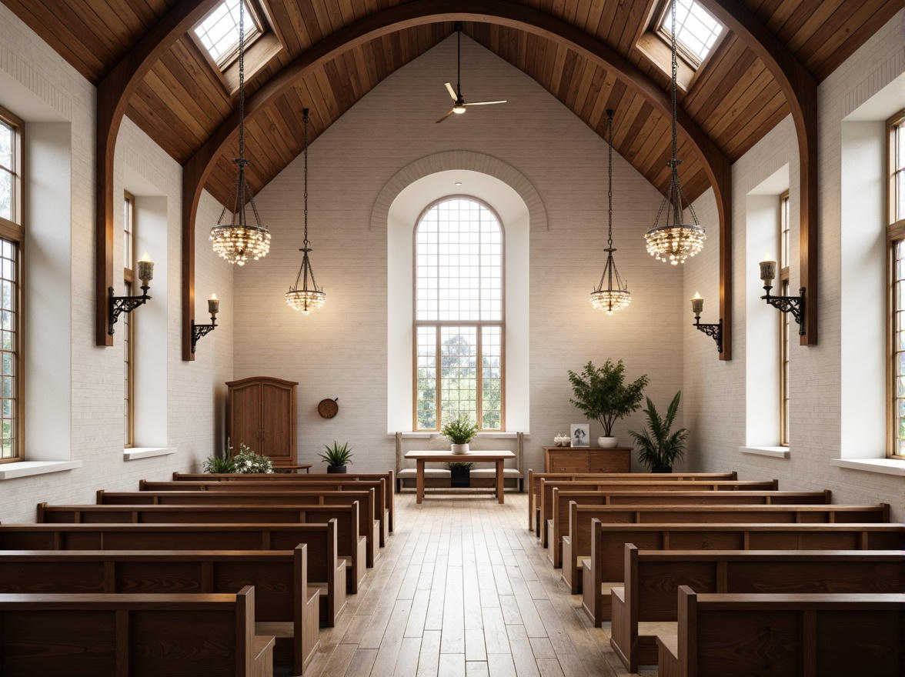

WORSHIP
“영혼이 감동이 있는 현대적 예배”

| 구분 | 시간 | 장소 |
|---|---|---|
| 1부 예배 | 오전 9:00 | 2층 본당 |
| 2부 예배 | 오전 11:00 | 2층 본당 |
| 오후 예배 | 오후 1:50 | 2층 본당 |
| 구분 | 시간 | 장소 |
|---|---|---|
| 유아 유치부 | 주일 오전 11:00 | 4층 교육관 |
| 유 초등부 | 주일 오전 11:00 | 4층 교육관 |
| 중 고등부 | 아동부 끝나고 바로 | 1층 사무실 |
| 학생 청년 모임 | 주일 오후 12:10 | 2층 로비 |
| 구분 | 시간 | 장소 |
|---|---|---|
| 새벽기도회 | 오전 5:00 | 동계 1층 / 하계 2층 본당 |
| 수요저녁예배 | 오후 7:30 | 2층 본당 |
| 금요기도회 | 오후 7:30 | 2층 본당 |
| 매일 중보 기도 | 자율적으로 | 2층 본당 |
“환영하고, 축복합니다.”
☎ 문의 041-548-1758